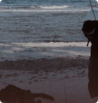

Yuki Ravn Liep

Kl.15.15-20.15
24.-26. juli
I et nyt videoværk til Alive Festival 2025 arbejder kunstneren Yuki med dystopiske stemninger og sanselige kontraster – skabt specifikt til en af festivalens mest rå og intense rammer: bunkeren på festivalpladsen. Yukis praksis tager afsæt i video og lyd, hvor kølige toner, fragmenterede klip og ambient lydlandskaber smelter sammen i en abstrakt helhed.
Kontrasten mellem det hårde og det porøse er central – en æstetik, der spejler bunkerens karakter som et rum præget af både ubehag og tryghed. Glæd dig til et værk, der ikke forsøger at fortælle én samlet historie, men i stedet indfanger en stemning: et dystopisk og sanseligt billede af det nordjyske landskab og sindelag. Værket udstilles i Undergangen og kan opleves i tidsrummet mellem 15.15 og 20.15 alle dage på festivalen.